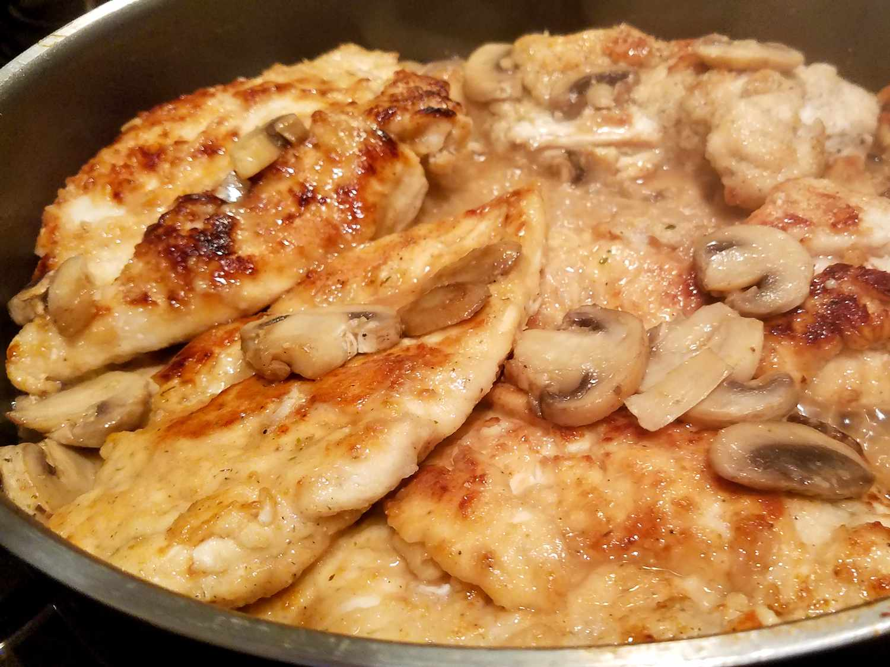

Chicken Marsala

Description
Chicken Marsala is a classic Italian-American dish featuring tender chicken breasts sautéed in a rich, flavorful Marsala wine sauce. The dish is typically made with boneless, skinless chicken breasts that are lightly seasoned, dredged in flour, and pan-fried until golden brown. The sauce is created by deglazing the pan with Marsala wine—a fortified wine from Sicily—and often includes sautéed mushrooms, garlic, and sometimes onions or shallots.
Ingredients
- ¼ cup all-purpose flour
- ½ teaspoon garlic salt
- ¼ teaspoon ground black pepper
- ½ teaspoon dried oregano
- 4 boneless, skinless chicken breast halves
- 1 tablespoon olive oil
- 1 tablespoon butter
- 1 cup sliced fresh mushrooms
- ½ cup Marsala wine
Steps
- Whisk flour, garlic salt, pepper, and oregano together in a bowl. Dredge chicken in flour mixture until lightly coated.
- Heat oil and butter in a large skillet over medium heat. Add chicken and cook until lightly browned, about 2 minutes. Flip chicken and add mushrooms. Cook, stirring mushrooms occasionally, until chicken is browned on the other side, about 2 more minutes.
- Pour Marsala wine over chicken. Reduce the heat to low, cover, and simmer until chicken is no longer pink in the center and the juices run clear, about 10 minutes. An instant-read thermometer inserted into the center should read at least 165 degrees F (74 degrees C).